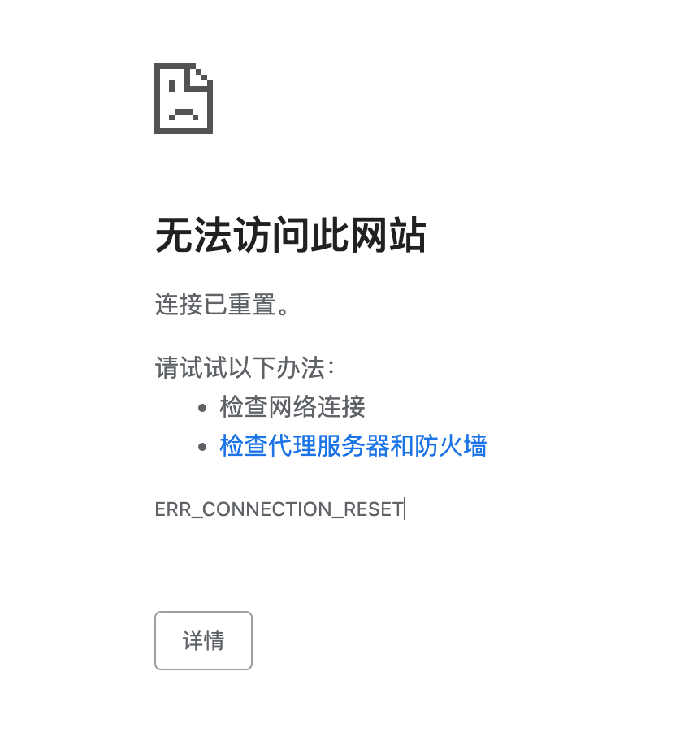
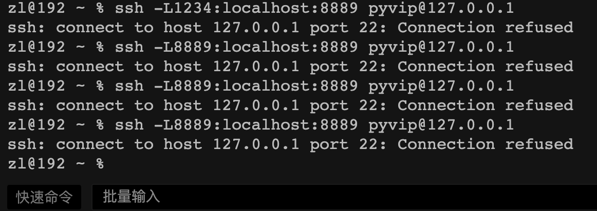

本篇是参加Datawhale社区的组队学习李沐老师的《动手学深度学习（Pytorh版）》学习笔记，后续将逐步更新学习进度。
1 初识深度学习
1.1
1.2 环境配置
运行环境：Unbuntu18.04(虚拟机)
1 | sudo apt update |
安装miniconda
1 | wget ‘miniconda下载链接' |
Jupyter notebook安装
1 | pip install jupyter d2l torch torchvision |
下载 D2L Notebook
1 | wget https://zh-v2.d2l.ai/d2l-zh.zip |
1 | # 进入jupyter notebook |
远程主机映射8888端口到本地，出现以下错误警告，且本地无法访问http://localhost:8889/，在Ubuntu设置了端口转发也不行
1 | zl@192 ~ % ssh -L8888:localhost:8888 pyvip@127.0.0.1 |


解决办法：
2 预备知识
2.1 数据操作
2023-03-22 22:28:49
基本概念
N维数组样例
N维数组是机器学习和神经网络的主要数据结构
- 0-d(标量)：1.0，一个类别
- 1-d(向量)：[1.0, 2.7, 3.4]，一个特征向量
- 2-d(矩阵)：[[1.0, 2.7, 3.4], [5, 6, 7], [8, 9, 10]]，一个样本-特征矩阵
- 3-d：RGB图片（宽×高×通道
- 4-d：一个RGB图片批量（批量大小×宽×高×通道）
- 5-d：一个视频批量（批量大小×时间×宽×高×通道）
创建数组
- 创建数组需要给定：形状（3×4矩阵）、每个元素的数据类型（32位浮点数）、每个元素的值，例如全是0或是随机数
- 元素访问
- 一个元素：[1,2]
- 一行元素：[1,:]
- 一列元素：[:,1]
- 子区域：[1:3,:]
- 子区域：[::3,::2]
数据操作
通常，我们需要做两件重要的是：1）获取数据；2）将数据读取到计算机后进行处理。
1 | # 导入torch |
张量：表示一个由数值组成的数组，可能有多个维度。一个轴的张量对应数学上的向量(vector) ;具有两个轴的张量对应数学上的矩阵(matrix) ;
1 | x = torch.arange(12) |
1 | tensor([ 0, 1, 2, 3, 4, 5, 6, 7, 8, 9, 10, 11]) |
1 | # 通过张量的shape属性来访问张量的形状 |
1 | torch.Size([12]) |
我们希望使用全0、全1、其他常量，或者从特定分布中随机采样的数字来初始化矩阵。
1 | torch.zeros((2,3,4)) |
1 | tensor([[[0., 0., 0., 0.], |
运算符
具有相同形状的张量，可以用标准算术运算符（+、-、*、/和**）进行按元素运算。
1 | x = torch.tensor([1.0, 2, 4, 8]) |
1 | (tensor([ 3., 4., 6., 10.]), |
幂运算
1 | torch.exp(x) |
1 | tensor([2.7183e+00, 7.3891e+00, 5.4598e+01, 2.9810e+03]) |
张量连结：把多个张量端对端地叠起来形成一个更大的张量。我们只需要提供张量列表，并给出沿那个周连结。
1 | # 按行连结（轴-0，形状的第一个元素） |
1 | (tensor([[ 0., 1., 2., 3.], |
张量中的所有元素进行求和，会产生一个单元素张量。
1 | X.sum() |
1 | tensor(66.) |
广播机制
张量形状不同时，可以通过*广播机制(broadcasting mechanism)*来执行元素操作：
通过适当复制元素来扩展一个或两个数组，以便在转换之后，两个张量具有相同的形状。
对生成的数组执行按元素操作
1
2
3a = torch.arange(3).reshape((3, 1))
b = torch.arange(2).reshape((1, 2))
a, b1
2
3
4(tensor([[0],
[1],
[2]]),
tensor([[0, 1]]))a和b分别是3×1和1×2矩阵，相加形状不匹配，我们将两个矩阵广播为3×2矩阵，a复制列，b复制行
1
a + b
1
2
3tensor([[0, 1],
[1, 2],
[2, 3]])
索引和切片
访问：张量的元素通过索引访问。第一个元素索引为0，最后一个元素索引为-1。
1 | X[-1], X[1:3] |
1 | (tensor([ 8., 9., 10., 11.]), |
改：指定索引来讲元素写入矩阵
1 | X[1, 2] = 9 |
1 | tensor([[ 0., 1., 2., 3.], |
节省内存
运行一些操作可能会导致为新结果分配内存，例如Y = X + Y，取消引用Y指向的张量，而是指向新分配的内存处的张量。
- 首先，不必要地分配内存，原地执行更新；
- 不原地更新，其他引用仍然会指向旧的内存位置，可能造成某些代码可能无意中引用旧的参数；
可以使用切片表示法将操作的结果分配给先前分配的数组，例如Y[ : ] = <expression>
1 | Z = torch.zeros_like(Y) |
1 | id(Z): 139931132035296 |
[如果在后续计算中没有重复使用X， 我们也可以使用X[:] = X + Y或X += Y来减少操作的内存开销。]
1 | before = id(X) |
转换为其他Python对象
张量tensor→NumPy张量(ndarray)，torch张量和numpy数组将共享底层内存。
1 | A = X.numpy() |
1 | (numpy.ndarray, torch.Tensor) |
要将大小为1的张量转换为Python标量，我们可以调用item函数或Python的内置函数。
1 | a = torch.tensor([3.5]) |
1 | (tensor([3.5000]), 3.5, 3.5, 3) |
2.2 数据预处理
读取数据集
数据存储操作
1 | import os |
数据读取操作
1 | data = pd.read_csv(data_file) |
处理缺失值
"NaN"项代表缺失值。处理缺失数据，典型的方法包括插值法和删除法
1 | # 插值法 |
转换为张量格式
所有条码都是数值类型的，可以转换为张量格式。
1 | import torch |
2.3 线性代数
标量
- 简单操作
$$
c = a + b\c = a · b\c = sina
$$
向量
向量表示数据样本时，具有一定的现实意义。比如预测贷款违约风险，可以将每个申请人与一个向量相关联，其分量与收入、工作年限、过往违约次数和其他因素对应。在数学表示法中，向量通常记为粗体小写符号。
长度、维度和形状
$\mathbf{x}\in\mathbb{R}^n$，向量的长度通常称为向量的维度，可以调用Python的内置len()函数来访问张量的长度，当用张量表示一个向量是，可以通过`.shape属性访问向量的长度。
矩阵
矩阵，通常用粗体大写字母表示，如$\mathbf{X}$、$\mathbf{Y}$和$\mathbf{Z}$，在代码中表示为具有两个轴的张量。$\mathbf{A} \in \mathbb{R}^{m \times n}$，矩阵$\mathbf{A}$由m行和n列的实值标量组成。任意的$\mathbf{A}$可以视为一个表格。
$$\mathbf{A}=\begin{bmatrix} a_{11} & a_{12} & \cdots & a_{1n} \ a_{21} & a_{22} & \cdots & a_{2n} \ \vdots & \vdots & \ddots & \vdots \ a_{m1} & a_{m2} & \cdots & a_{mn} \ \end{bmatrix}.$$
1 | A = torch.arange(20).reshape(5, 4) |
1 | tensor([[ 0, 1, 2, 3], |
矩阵转置
1 | A.T |
张量
张量是描述具体有任意数量轴的n为数组的通用方法。向量是一阶张量，矩阵是二阶张量。张量用特殊字体的大写字母表示$\mathsf{X}$、$\mathsf{Y}$和$\mathsf{Z}$。